Hypit이 하는 일과 일하는 순서
이 영상은 리버스 엔지니어링 시리즈의 3편이에요. 1편은 소프트웨어, 2편은 웹사이트였고 이번엔 잘된 쇼츠가 대상이에요. 슬라이드 오른쪽 칸을 보면 /hypit 이거 통째로 복제해 줘 한 줄로 컷 타이밍, 자막, 배경음악, 효과음의 구조를 가져온다고 적혀 있어요. 그 아래에는 깃허브 스타 2.7만 개와 지난주 실행 파일 다운로드 1.1만 건이 있어요.
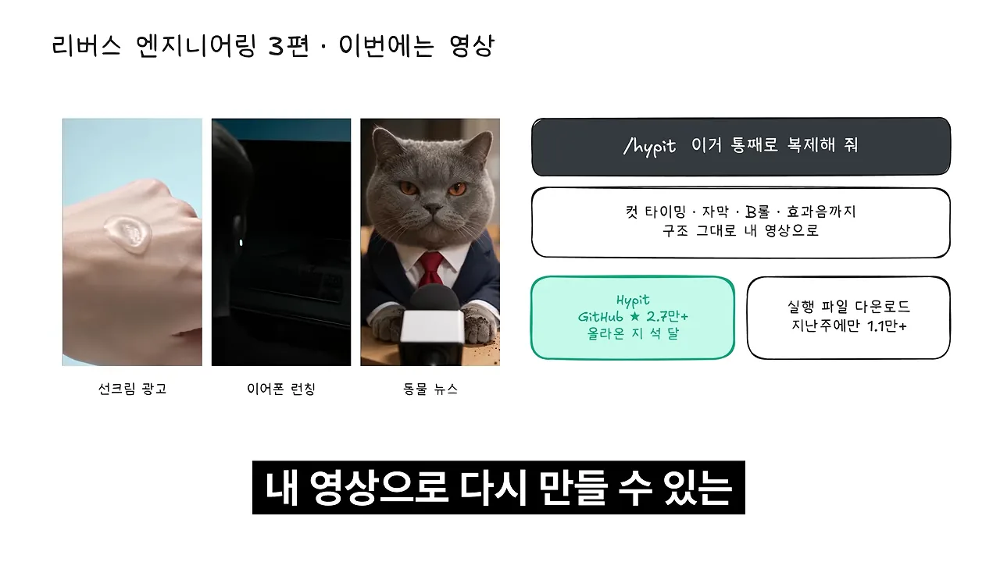
영상에서 해 보는 일은 세 가지예요. 카드 세 장이 차례로 틀 뜯어보기, 선크림 광고를 세럼 광고로 복제하기, 같은 프롬프트로 영상 모델만 바꿔 비교하기예요. 이 문서도 이 순서를 따라가요.
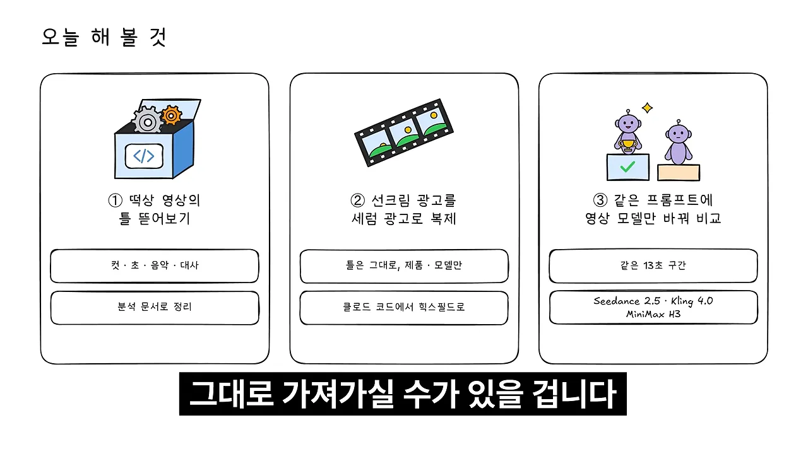
영상 모델이 아니라 에이전트용 스킬이에요
영상을 뽑아 주는 모델로 오해하기 쉬워요. 슬라이드 왼쪽의 빨간 칸이 바로 그 점을 짚어요. Hypit은 클로드 코드나 코덱스 같은 에이전트에 얹는 스킬이고, 영상을 만드는 언어와 작업 시스템을 건네줘요. 그러면 맨 아래 줄처럼 에이전트가 직접 보고, 기획하고, 재료를 만들고, 편집까지 해요. 발표자는 이 역할을 감독 겸 PD(Producing Director)에 빗대요.
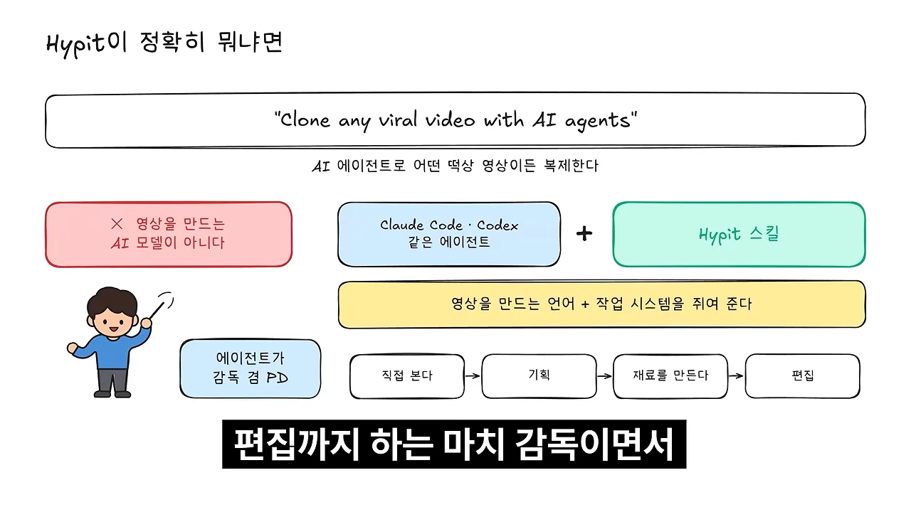
깃허브 README에는 복제 예시가 표로 있어요. 위쪽 Reference가 원본, 아래쪽 Clones가 Hypit으로 바꾼 버전이에요. 세 칸의 인물과 주제가 서로 달라요. 자막 색깔까지 다른데, 이런 자막과 효과는 Studio라는 편집 화면에서 다뤄요. 다만 발표자는 편집까지 배우기엔 초보자에게 어렵다고 봐요. 그래서 영상은 분석 기능만 쓰고 Studio는 건너뛰어요.
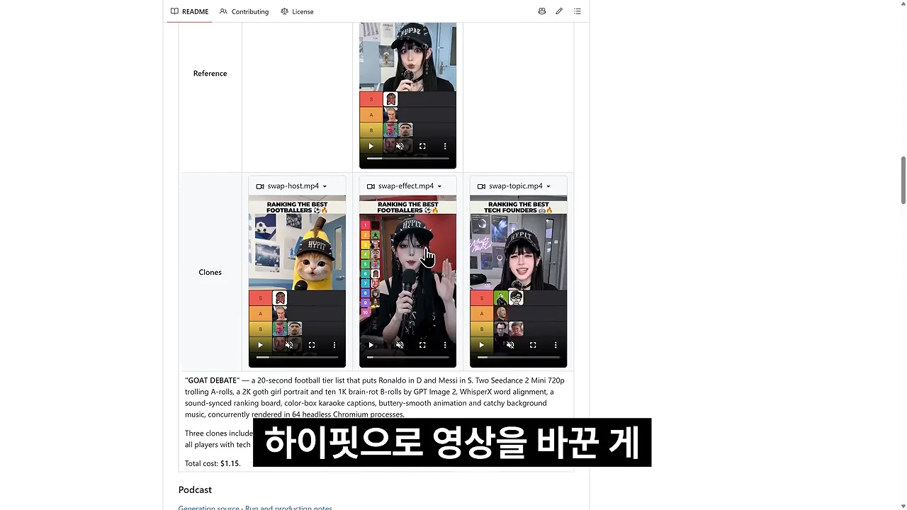
먼저 끝까지 뜯어봐요
동물 뉴스 쇼츠를 예로 든 슬라이드예요. 가운데 그림이 1.5초 간격으로 뽑은 프레임 격자이고, 그 아래 다섯 칸이 첫 문장을 단어 단위로 끊은 대사예요. 전사를 맡기는 도구는 Hypit의 기본인 WhisperX이고, 발표자는 ElevenLabs로 충분하다며 그쪽을 택했어요. 오른쪽 위 파란 칸처럼 격자와 전사를 겹치면 어느 단어에 자막, 컷, 효과음이 붙는지 알 수 있어요. 노란 칸의 훅과 끝까지 보게 만드는 이유도 여기서 나와요. 결과는 프로젝트 폴더에 분석 문서로 남아요.
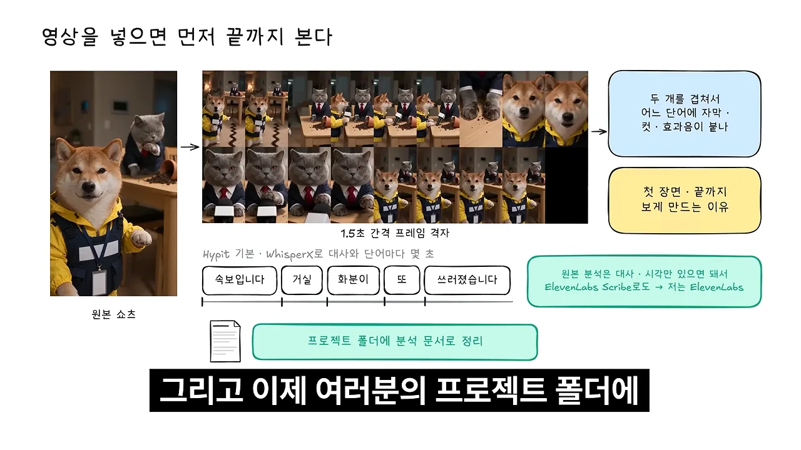
그다음 다시 만들어요
네 칸이 순서대로예요. 사람이 원하는 걸 적어 주면, 에이전트가 원본의 틀을 그대로 둔 새 기획안을 쓰고, 장면마다 필요한 이미지와 영상을 설계도로 정리한 뒤, 그걸 만들 프롬프트까지 뽑아요. 발표자가 Hypit의 가장 큰 장점으로 꼽는 게 마지막 칸까지 한 스킬에 들어 있다는 점이에요. 아래 노란 칸처럼 이 영상에서 실제 이미지와 영상은 힉스필드에서 만들어요.
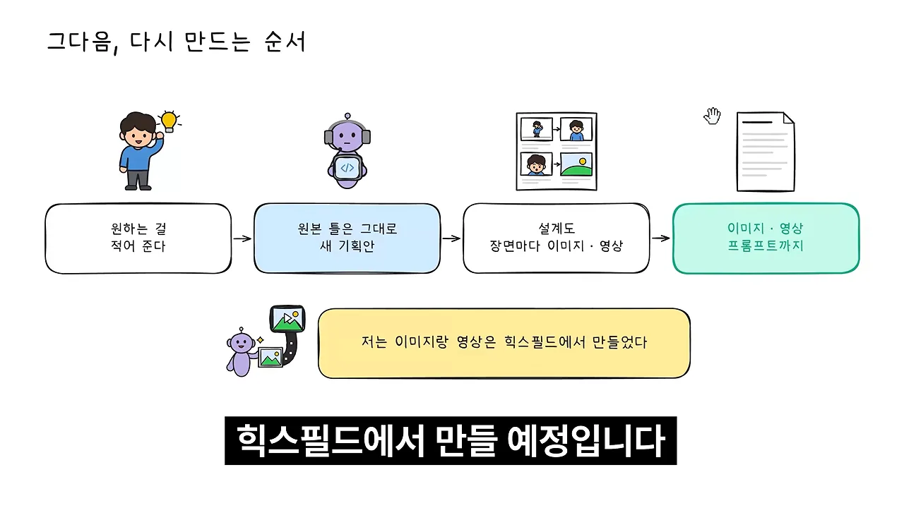
두 슬라이드에 나뉜 흐름을 이 영상의 사례에 맞춰 한 장으로 모으면 이래요. 색이 도구의 구분이에요.
복제할 쇼츠 세 편과 설치
복제할 원본은 세 편이에요. 왼쪽부터 고급 선크림 광고, 게이밍 이어폰 런칭, 동물 뉴스예요. 오른쪽 칸에 쇼츠에서 잘 터지는 형식이라고 적혀 있고, 아래 칸에 25초 세로 영상이며 음악과 효과음이 있다고 나와요. 발표자는 이 영상들을 직접 만들었다고 말해요. 다른 사람 영상을 가져다 쓰는 시범이 아니라는 뜻이에요.
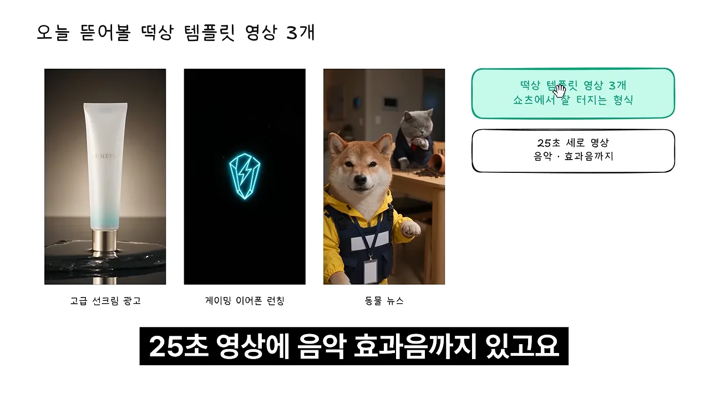
스킬 설치
README의 Install once 항목에 명령어가 있어요. 빨간 원이 그 자리예요.
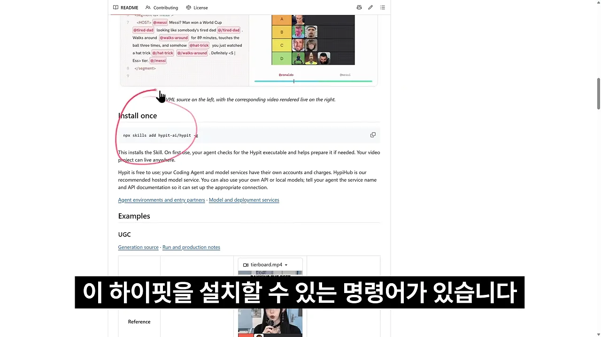
npx skills add hypit-ai/hypit -g발표자는 이 명령어에 바라는 쓰임새를 같이 적어 클로드에 넣어요. 화면의 입력창을 보면 스튜디오 내용 말고 분석만 할 거고, 이미지와 영상은 나중에 힉스필드로 만들 거라고 적었어요. 아래 체크리스트에 설치, 스킬 구조 살피기(studio vs analysis), 분석 전용과 힉스필드로 설정, 확인 순서가 나와요.
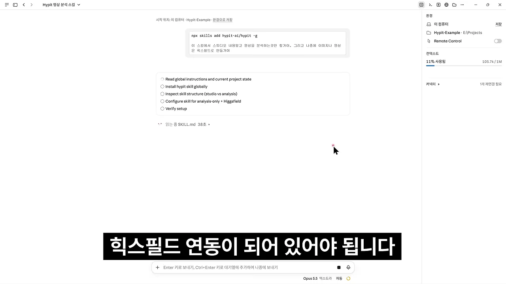
힉스필드 MCP 연결
이 흐름에서는 힉스필드 연동도 있어야 해요. 힉스필드 MCP 페이지에서 Connect Higgsfield 버튼을 누르면 클로드 데스크톱 앱과 바로 연결돼요. 수동 설정 창은 세 단계로 보여 줘요. MCP 링크 복사, 클로드 데스크톱 열기, 커스텀 커넥터 추가예요.
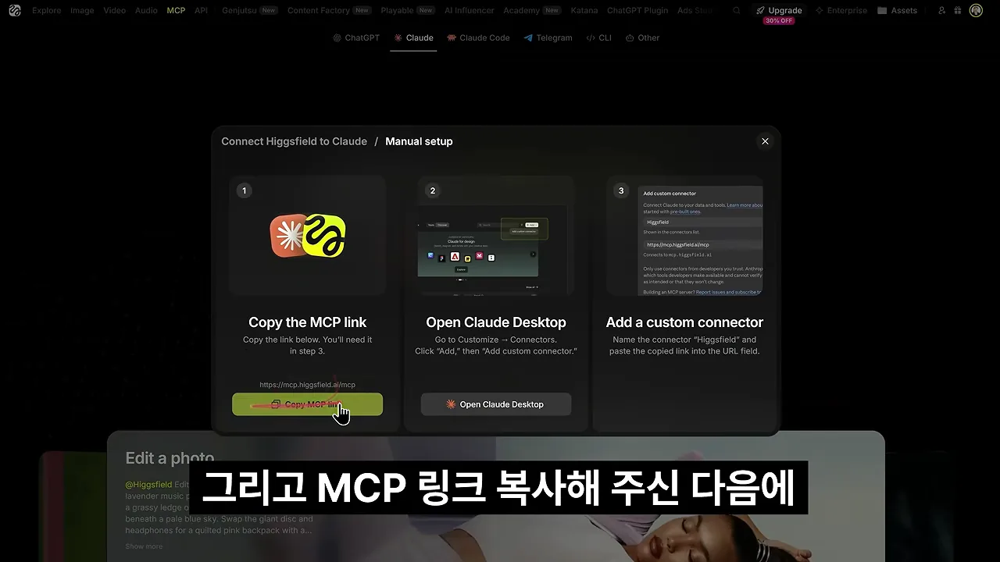
클로드 설정의 커넥터 화면에서 커스텀 커넥터를 추가해요. 입력창에 https://mcp.higgsfield.ai/mcp를 붙여 넣고, 이름은 힉스필드로 적어요. 그 뒤 힉스필드 계정과 연동하면 바로 쓸 수 있어요.
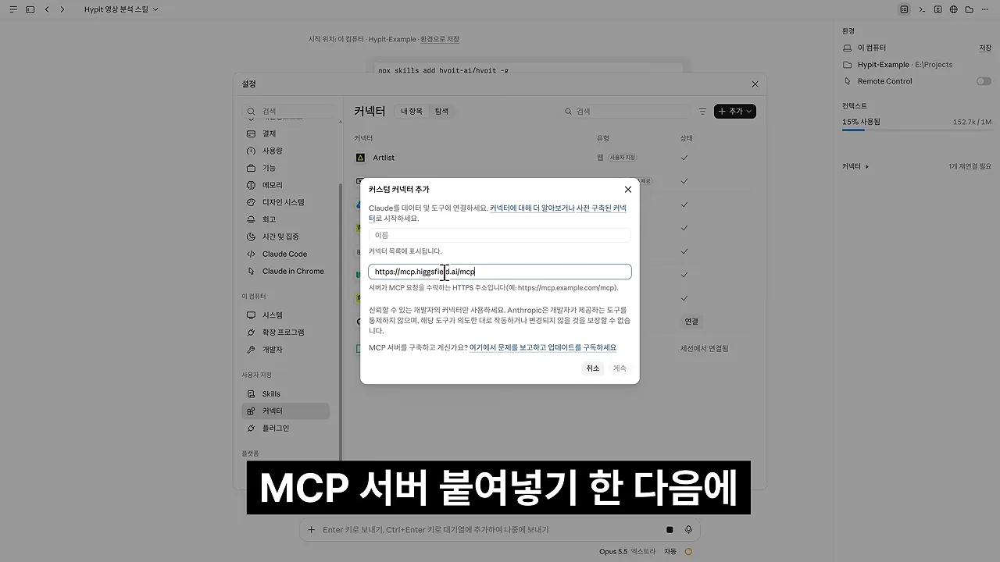
선크림 광고를 뜯어보면
영상 파일을 프로젝트 폴더에 넣거나 채팅에 붙여 넣고, Hypit으로 분석하되 전사는 ElevenLabs로 하라고 요청해요. 에이전트는 컷마다 화면을 보고, 대사를 전사하고, 소리와 효과음, 배경음까지 정리해요.
결과를 요약한 슬라이드예요. 왼쪽이 초, 가운데가 화면, 오른쪽이 소리예요. 가운데 줄을 내려 읽으면 제품 매크로에서 아침 햇살, 도심 반사광, 밤의 휴대폰 불빛으로 빛이 바뀌어요. 초록 칸이 그 구성을 '하루 동안 바뀌는 빛을 컷마다 하나씩'이라고 정리해요. 노란 칸에는 내레이션이 마지막 컷에만 나온다고 적혀 있어요.
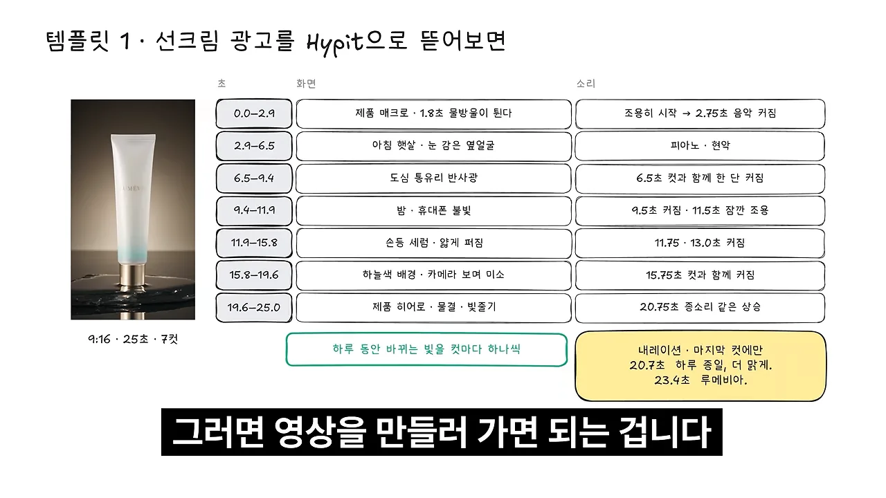
표의 초를 길이대로 다시 그려 봤어요. 맨 윗줄은 분석 페이지가 묶은 네 덩어리예요. 마지막 컷이 가장 길어요. 말은 맨 끝에 한 번만 나와요.
분석 페이지는 더 자세해요
Hypit은 결과를 analysis.html 페이지로도 만들어 줘요. 위쪽 줄이 7컷의 썸네일이고, 아래 카드 네 장이 덩어리별 설명이에요. 시선 잡기, 빛을 받는 하루, 답, 이름 붙이기 순서예요. 대사가 거의 없는 광고인데도 줄거리가 읽혀요.
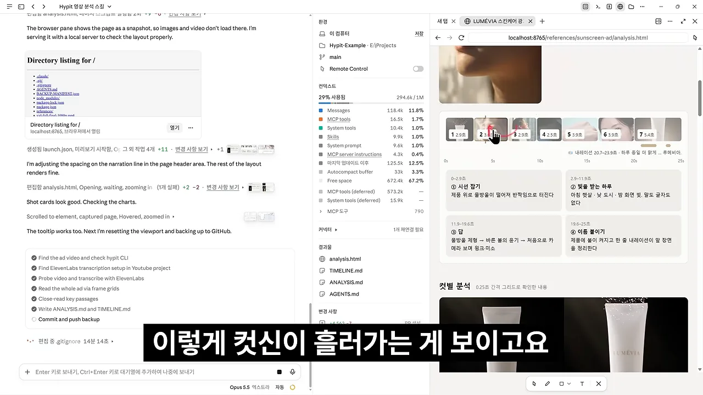
analysis.html, TIMELINE.md, ANALYSIS.md가 함께 보여요. 영상 07:54에서 보기컷별 분석은 초 단위까지 내려가요. 첫 컷 카드를 보면 1.0초에 물방울이 떨어져 1.75초에 튜브 윗면에 닿고, 2.0초에 반짝이는 입자로 터져요. 그 아래 역할 줄에 '시선 잡기'가 있어요. 발표자가 '이건 훅이다'라며 동그라미 친 자리예요.
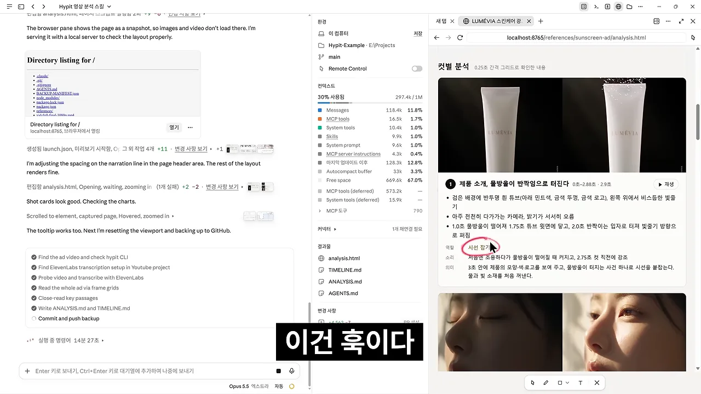
더 내려가면 측정값이 나와요. 0.25초마다 잰 화면 밝기와 소리 크기 그래프예요. 세로선이 컷이고 회색 띠가 내레이션이에요. 소리 그래프 설명에는 내레이션이 음악보다 약 20dB 크다고 적혀 있어요.
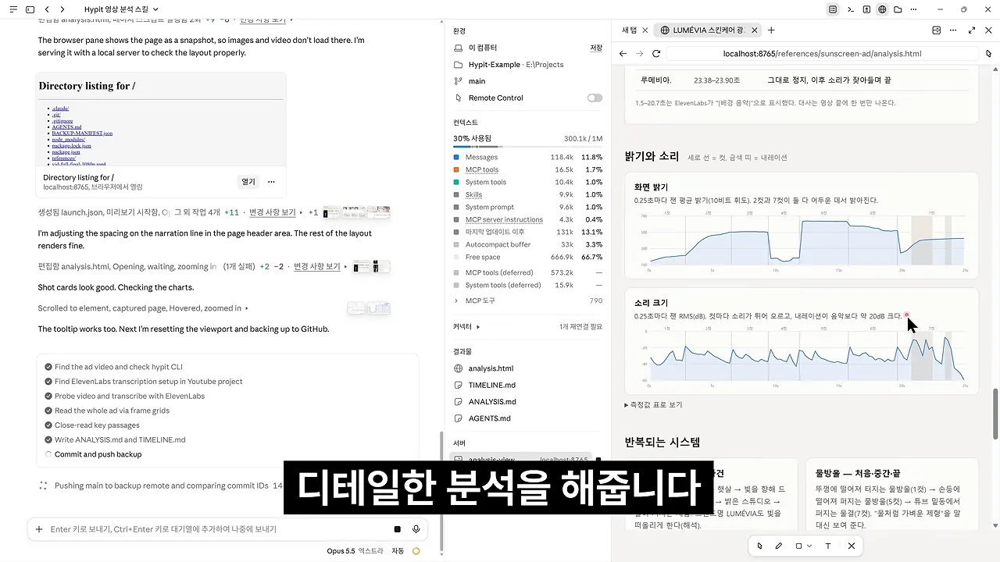
그래서 발표자는 영상을 처음부터 끝까지 보지 않아도 흐름을 이해할 수 있다고 말해요. 그냥 보고 비슷하게 만드는 것보다 이 분석을 거친 뒤 만드는 쪽이 낫다는 게 그의 결론이에요.
세럼 광고로 바꾸고 세 모델로 만들기
분석이 끝나면 요청은 한 줄이에요. 어두운 입력칸에 있듯 이 영상을 레퍼런스로 삼고, 빛이 바뀌는 몽타주와 고급스러운 분위기는 두고, 비타민C 세럼 광고로 바꿔 달라고 해요.
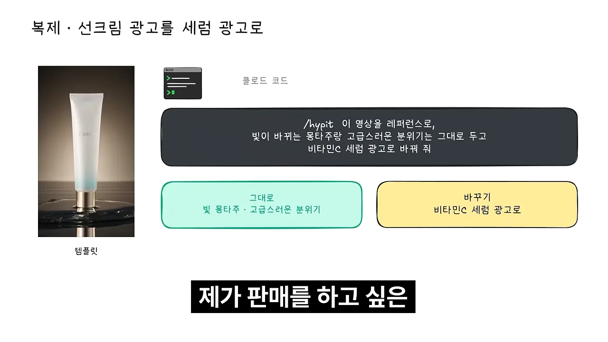
왼쪽 초록 칸이 유지한 것, 오른쪽이 바꾼 것이에요. 컷 수와 타이밍, 음악, 빛의 흐름은 그대로예요. 제품, 인물, 손등 컷, 배경색, 내레이션이 달라져요. 브랜드 이름도 원본의 루메비아에서 시트렐로 새로 지었어요.
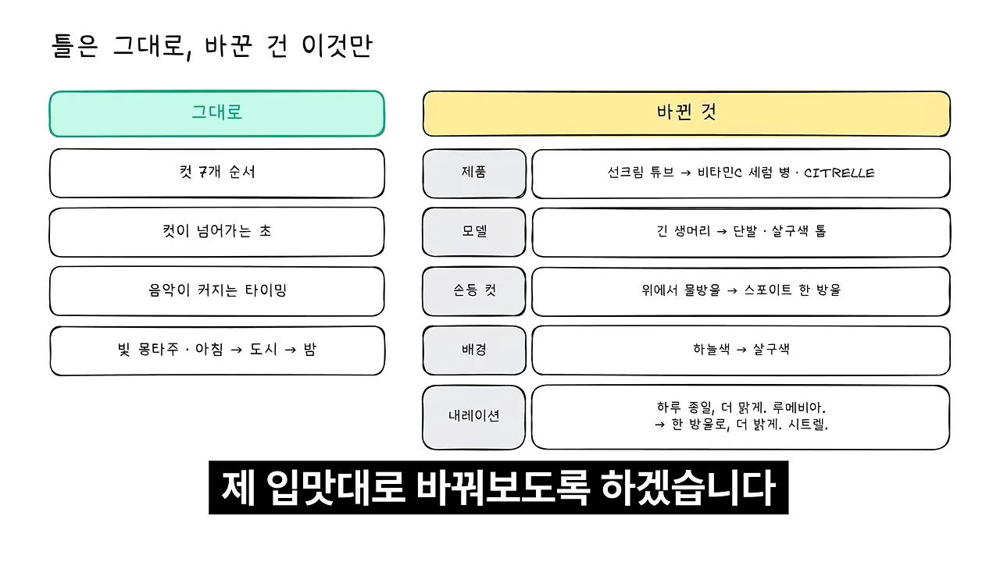
제작은 힉스필드로 넘겨요
클로드 코드가 MCP로 힉스필드에 바로 요청해요. 그림 왼쪽의 모델 시트와 제품 이미지를 먼저 만들고, 이 둘을 참고 이미지 @img1, @img2로 넣어요. 초록 칸의 Seedance 2.5가 9:16, 25초를 한 번에 뽑으면, 노란 칸처럼 음악과 효과음, 내레이션까지 들어간 완성본이 나와요. 그래서 슬라이드 아래에 '따로 편집할 게 없다'고 적었어요.
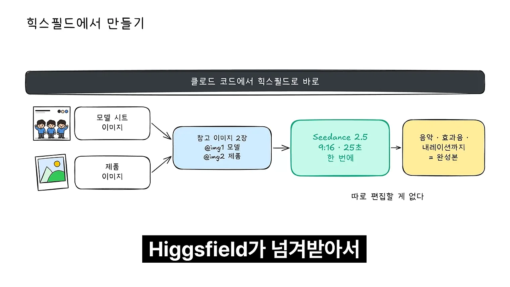
Hypit이 뽑아 준 계획과 프롬프트도 슬라이드에 나와요. 왼쪽 위 hypit plan은 계획이 유효하고 요청이 8건이라고 알려요. 그 아래 칸이 내역이에요. 이미지 생성 2번, Seedance 2.5 1번, 내 컴퓨터 처리 5번이에요. 오른쪽 초록 칸이 영상 프롬프트로, 7컷의 빛 흐름과 내레이션을 그대로 적어 뒀어요.
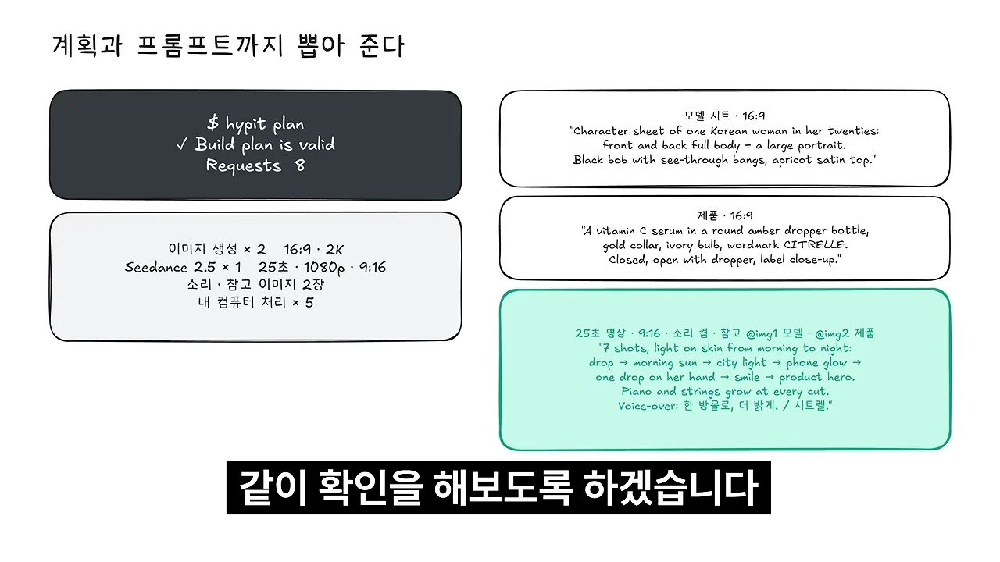
세 모델로 같은 요청 돌리기
슬라이드가 정리한 모델별 사양이에요. 시댄스와 클링은 한 번에 30초까지, 미니맥스는 2K 화질에 15초까지예요. 노란 칸은 발표자가 써 본 인상이에요.
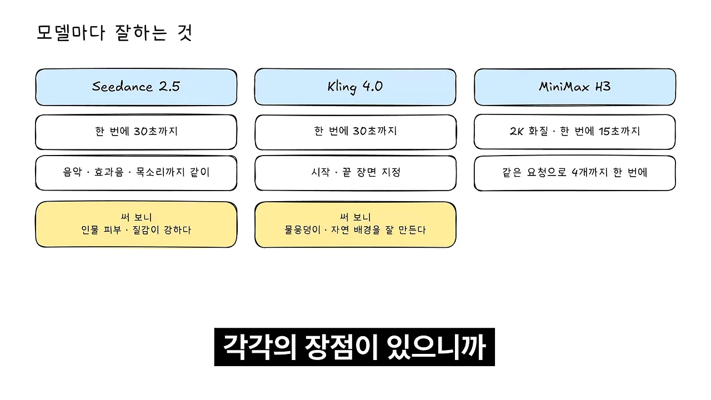
결과를 나란히 놓은 두 장면이에요. 먼저 인물 쪽이에요. 시댄스는 밤의 휴대폰 불빛 장면을 보여 주고, 클링과 미니맥스는 손을 뺨에 댄 얼굴 장면이에요.
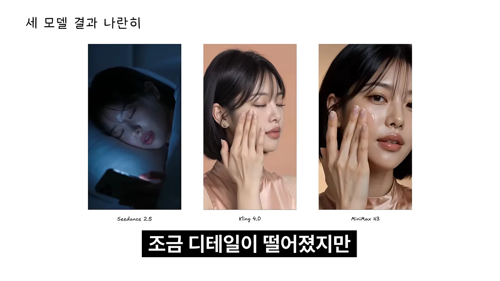
다음은 제품 쪽이에요. 시댄스는 스포이트에서 떨어지는 한 방울과 손끝을 잡았어요. 클링과 미니맥스는 호박색 병 전체가 물결 위에 선 제품 컷이에요. 두 병 모두 CITRELLE 글자가 또렷해요.
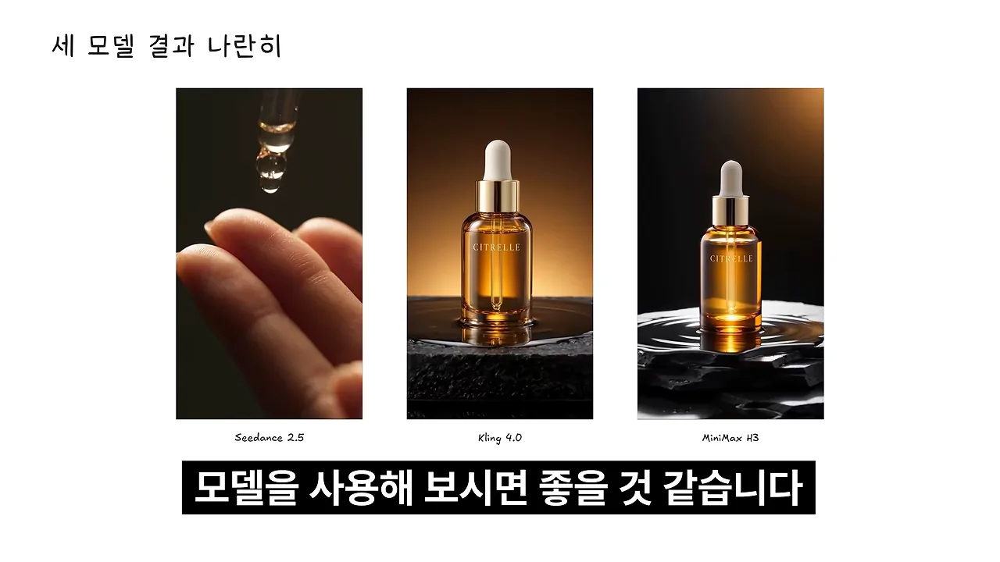
| 모델 | 슬라이드의 사양 | 슬라이드의 메모 | 결과를 본 뒤 한 말 |
|---|---|---|---|
| Seedance 2.5 | 한 번에 30초, 음악·효과음·목소리까지 | 인물 피부·질감이 강해요 | 디테일이 살아 있어요 |
| Kling 4.0 | 한 번에 30초, 시작·끝 장면 지정 | 물웅덩이·자연 배경을 잘 만들어요 | 재질과 촉감이 좋아요 |
| MiniMax H3 | 2K, 한 번에 15초, 같은 요청 4개까지 | 메모 없음 | 디테일은 떨어지지만 얼굴 표현에 강점이 있어요 |
두 열을 같이 보면 질감을 어느 모델의 강점으로 보느냐가 슬라이드와 말에서 조금 달라요. 둘 다 발표자의 감상이고 측정한 값은 아니에요. 발표자도 강점마다 골라 쓰라고만 해요.
재생 장면에도 눈여겨볼 차이가 있어요. 프롬프트의 내레이션은 '한 방울로, 더 밝게'인데, 시댄스 결과에서 들리는 말은 '자는 동안 더 밝게'예요. 클링과 미니맥스는 프롬프트대로예요. 챕터 길이로 보면 재생 시간도 달라서 시댄스 구간은 약 28초, 클링과 미니맥스 구간은 16~17초예요. 영상은 이 차이를 따로 설명하지 않아요.
상업적으로 써도 될까요?
결론은 상업적으로 쓸 수 있다는 거예요. 슬라이드 왼쪽 위 파란 칸이 라이선스 이름으로, Apache 2.0에 조건을 더한 형태예요. 초록 칸이 되는 일이고, 빨간 칸 두 개가 안 되는 일이에요. 내 회사 일이나 클라이언트 작업은 무료예요. 남들이 쓰는 서비스로 호스팅하거나 되팔면 상업 라이선스가 따로 필요하고, 실행 화면과 실행 보고서의 Hypit 이름과 로고는 지우면 안 돼요.
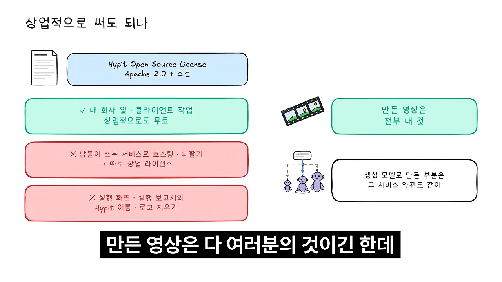
발표자가 더 힘줘 말하는 건 라이선스가 아니라 레퍼런스예요. 빨간 칸처럼 남의 영상에 나온 사람, 화면, 브랜드, 문구를 그대로 쓰면 문제가 생겨요. 초록 칸이 가져와도 되는 것으로 컷 구성, 자막 타이밍, 리듬을 꼽아요. 화면에 나오는 건 전부 내 것으로 채워요. 맨 아래 줄은 잘된 영상의 구조를 가져와 내 걸로 바꾸는 게 훨씬 빠른 출발점이라고 말해요.
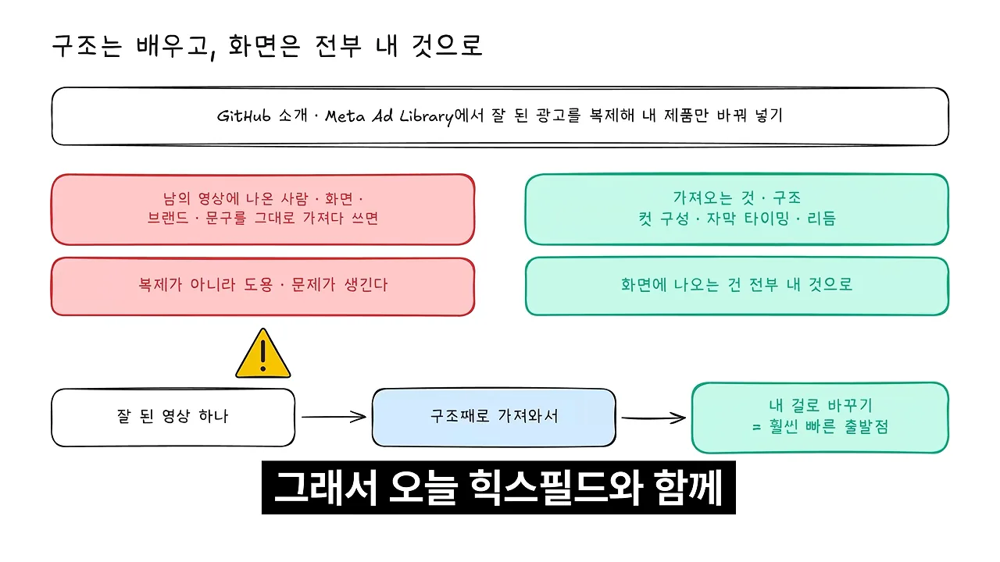
영상의 좋은 부분은 구조를 파악을 하시되 여러분의 입맛에 바꿔서 만드시는 걸 추천드립니다.
— 영상 11:15
슬라이드 맨 위 줄은 Meta Ad Library에서 잘된 광고를 복제해 내 제품만 바꿔 넣는 쓰임을 소개해요. 바로 아래 빨간 칸과 같이 읽으면, 제품만 바꾸는 걸로는 부족하고 사람과 화면, 문구까지 내 것이어야 해요.